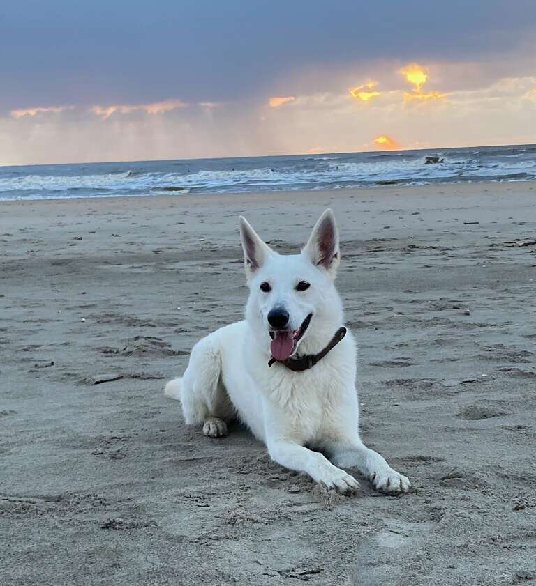

Wie ben ik

Mijn naam is Constantijn Warnar en ben een jongeman van 56 jaar oud. Samen met mijn dochter van 15 jaar en onze witte herder Vida, wonen
we in het mooie Duindorp oftewel Scheveningen Zuid. We wonen direct aan de duinen en de zee is op nog geen 200 meter lopen. Wij zijn hier
sinds een jaar komen wonen en het leven ziet er veel relaxter uit, als je elke dag de zee kan zien. In de ochtend loop ik rond 6 uur met Vida
ruim een uur over het strand, ongeacht het weer. Dit geeft zoveel rust en energie, waar ik nooit eerder bij stil heb gestaan. Daarnaast heb ik
nog een zoon van 26 jaar oud, die sinds kort weer in Nederland woont. Daarvoor is hij drie jaar in Barcelona werkzaam geweest, wat regelmatig
leuke vakantie tripjes opleverden
Mijn dochter voel zich hier als een vis in het water en het zal u niet verbazen, maar zij is regelmatig op een surfboard te vinden en werkt
sinds kort ook bij strandtent Aloha, waar ze de beach vibe kan voelen.
Ondanks dat ik 100% afgekeurd ben, probeer ik het maximale uit het leven te halen door niet mijn hoofd te laten hangen. Ik geniet nu veel meer
van de kleine dingen, relativeren is een stuk makkelijker geworden en veel zaken zijn onbelangrijk. Het belangrijkste is om te genieten van hetgeen
je wel hebt en kan en niet juist van hetgene wat je niet hebt of kan. Momenteel volg ik de studie Webdesign, wat niet makkelijk gaat, maar mij wel
de mogelijkeid biedt om de hersenen scherp te houden. Helaas heb ik veel moeite om binnen de grenzen van mijn kunnen te blijven, maar het voordeel
hiervan is dat ik soms terug kan kijken op een mooie prestatie die ik heb neergezet. Dit geeft mentaal voldoening, maar fysiek vaak ongemak. Hierin
een balans vinden blijft een uitdaging, maar zonder uitdagingen geen leven.
Wat heb ik zoal in mijn leven gedaan
Sinds mijn 15e ben ik al op mijzelf gaan wonen, tenministe, in een zustersflat in Den Haag. Ik ben op de afdelingskeuken van het rode kruis beland om voor
de patienten drinken en eten te serveren, kleine klusjes doen, maar vooral de patienten ene goed gevoel geven zoveel als ik kon, ondanks hun vaak vervelende
situatie.
Daarna ben ik de opleiding verpleegkundige A gaan volgen, maar de verleidingen op die leeftijd, wonen in een zustersflat en zelfstandig leven, waren niet de
juiste ingredienten om hard te studeren. Ik ben dan ook gezakt en ben in Bosch en Duin de opleiding ziekenverzorgende gaan volgen. Een half jaar voor het
afstuderen ben ik gestopt, omdat ik mij niet meer kon verenigen met de manier waarop er met ouderen werd omgegaan. Na een aantal sterfgevallen was voor mij
de maat vol en ben verder gegaan in de administratie en uiteindelijk ook in de sport.
Om meer over mijn competenties en werkevaringen te lezen, raad ik u aan om naar mijnCV te gaan voor meer informatie.
Motivatie
In de loop der jaren heb ik veel ervaring opgedaan in de verschillende bedrijfstakken. Ik heb als werknemer, maar ook als ondernemer aan de slag gegaan. Het voordeel
meerdere werkgevers is de algemene kennis die je op meerdere vlakken krijgt. Daarnaast is de ervaring als ondernemer en als werkgever heel fijn om beide kanten te kunnen
belichten.
Je wilt in elke functie het maximale presteren en dit gaat gepaard met tijd en energie. Ik vind dat je bereid moet zijn om dit
erin te steken, omdat je anders je functie niet naar behoren kan vervullen. Vooral als je met en voor mensen werkt, is het belangrijk
dat zij op je kunnen bouwen en zeker ook vertrouwen dat je alles in het werk stelt om hen te helpen, te informeren of bij te staan.
Niets is gepland geweest in mijn carriere, maar is allemaal op mijn pad gekomen. Soms omdat ik zocht naar mogelijkheden die bij mijn
situatie pasten, soms omdat ik de mogelijkheid geboden kreeg en soms ook omdat ik weer toe was aan nieuwe uitdagingen. Daarnaast vond ik het
belangrijk naar mijn kinderen toe, om te laten zien, dat je ondanks je beperkingen, niet beperkt hoeft te zijn.